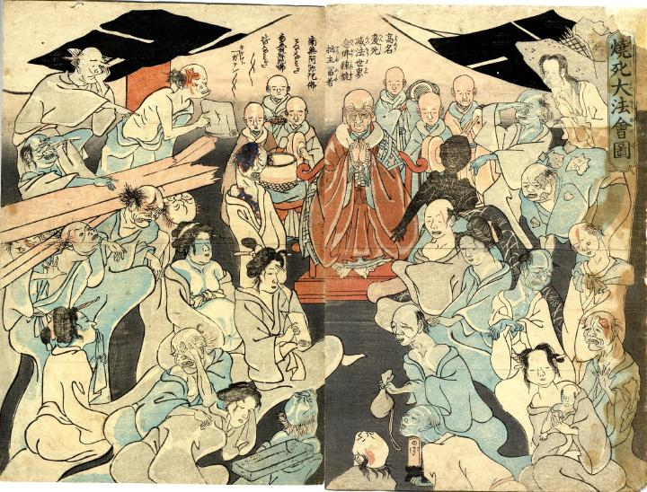

安政江戸地震で亡くなった死者たちを供養する法会。導師の周りを死者たちが取り囲んでいる。
出典：親書誌：U426_nichibunken_0240：焼死大法会図；ショウシダイホウエズ／日付：2011／資源識別子：U426_nichibunken_0240_0001_0000
Copyright (c)2010- International Research Center for Japanese Studies, Kyoto, Japan. All rights reserved.